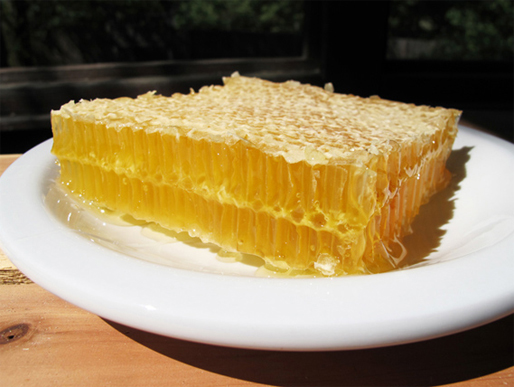
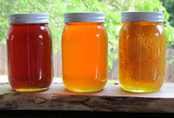

Artisan honeys are the natural combination of local nectars, collected each season by the honey bees and harvested using traditional methods.
Natural honeys range in color from nearly colorless to dark amber. The flavor of each varies from delectably mild to distinctively bold. Honey Color Guide
The color and flavor of my raw artisan honeys differ depending on each season's blend of local nectars gathered by the honey bees at each apiary... and no two seasons or locations are alike. It could be said that artisan honeys are a once in a lifetime blend!
My honeys are harvested from natural comb newly drawn by the bees each season free of commercial wax and synthetic treatments. Each comb of fully capped honey is individually selected at the optimal time for harvest.
Small batch harvests are hand cut, drained and strained the old fashion way without being heated. My methods are more time consuming but yield the highest quality of raw natural honey.
The hearty genetics of my colonies are derived from open mating of locally adapted feral bees. My bees are kept year-round in Indiana at select natural forage areas. Conservative honey harvests allow my bees to winter on their own honey and pollen stores without being fed high-fructose corn syrup.
